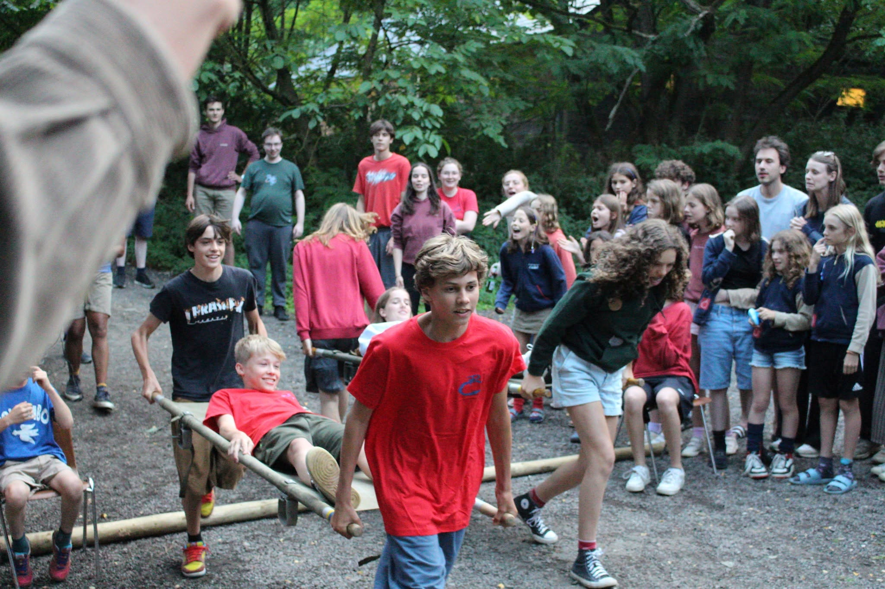
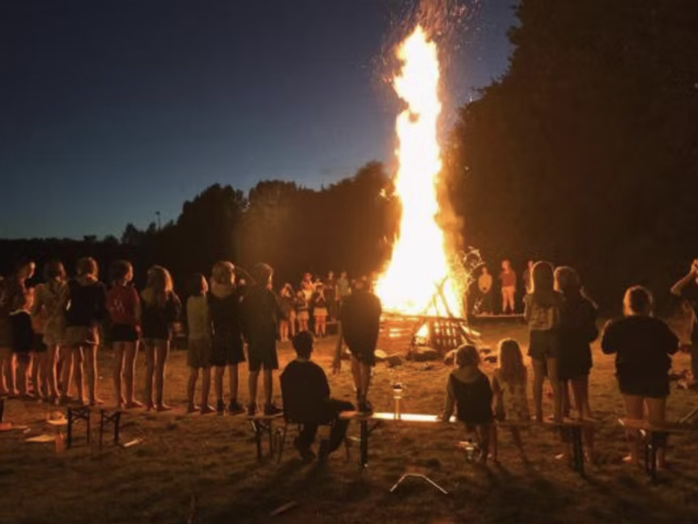

CHIRO SPIRIT HEVERLEE
Over ons
CHIRO SPIRIT HEVERLEE is er bijna elke zondag in het schooljaar van 14u tot 17u30. Iedereen van het 1ste leerjaar tot het 6de middelbaar is altijd van harte welkom om eens te proberen of om meteen in te schrijven.
Kon je de eerste zondag niet komen? Geen probleem, er mogen iedere zondag van het jaar leden bijkomen! Wil je weten wat er op het programma staat? Check de kalender of 't Gazetje (bij documenten)!
Wij gaan ook elk jaar op kamp van 21 juli tot 31 juli, dus u kan die periode alvast vrij houden van vakanties. De speelclub en kriebels iets korter mee (speelclub: 25-31 juli, kriebels: 23-31 juli). De locatie van het kamp is strikt geheim en wordt pas bekend gemaakt op de laatste Chirozondag in mei!
Lidgeld
Het lidgeld bedraagt 50 euro voor het eerst ingeschreven kind en voor al de daarop volgende kinderen bedraagt het 45 euro. Gelieve dit bedrag over te schrijven op ons rekeningnummer BE69 7343 3413 3178 met de vermelding: ‘lidgeld + naam + groepsnaam of leeftijd).
Uniform
Het Chiro-uniform dragen is niet verplicht, maar we moedigen dit wel aan omdat dit het groepsgevoel en de herkenbaarheid bevordert. Een T-shirt (van onze eigen Chiro) kost 10 euro voor een kindermaat en 12 euro voor een volwassenmaat. Deze kan je bij het begin of het einde van de Chiro bij iemand van de leiding kopen. Voor andere Chirokledij (een trui, een rok, een short,..) kan je terecht bij De Banier (J.P. Minckelersstraat 29 in Leuven).
Met vragen en opmerkingen kan u altijd mailen naar chirospiritheverlee@gmail.com.

Kalender
Gewone Chirozondagen zijn steeds van 14u tot 17u30, voor alle groepen. Tenzij anders meegedeeld door de leiding, wordt iedereen om 14u op het Wezenplein verwacht.
Speciale Chirozondagen
- 20 september – Startdag 2026-2027
- 4 oktober – Vriendjesdag Elke dag is vriendjesdag!
- 25 oktober – Spaghettifeest! Al de info staat in de mail :)
- 8 november – Actie voor 11.11.11
- 29 november – Schaatsen en Christus Koning
- 6 december – Sinterklaas komt naar de Chiro! Stoute kindjes kunnen zich vandaag maar beter verstoppen. Alle brave kindjes worden wel beloond door de lieve Sint die ons een bezoekje komt brengen! Voor de oudste groepen (Keti's en Aspi's) start de Chiro pas om 15u30, zodat ze nog voldoende tijd hebben om voor hun examens te studeren.
- Vrijdag 18 december – Fakkeltocht Iedereen (leden, ouders, broers en zussen, enz.) is van harte welkom! We beginnen om 19u en ronden af om 20u30. Wij voorzien fakkels voor de leiding; wie zelf een fakkel wil dragen kan die o.a. aanschaffen bij de Brico. Het is niet de bedoeling dat Speelclubbers en Rakwi's (zonder ouder) een fakkel dragen. Zondagnamiddag is het dus voor geen enkele groep Chiro.
- 14 februari – Oudleiding in leiding
- 28 februari – Zwerfvuilactie
- 14 maart – Openchirodag
- Vrijdag 26 maart – Quiz
- 2 mei – Meerdag We gaan een dagje naar het meer met heel de Chiro! Meer info volgt via mail en op de site.
- 16 mei – Laatste Chirozondag van dit schooljaar Vanaf 16u zijn alle ouders welkom en geven we info over het kamp, daarbij kan iedereen smullen van overheerlijke pannenkoeken!
Chirokamp
Eind juli gaat ons fantastische zomerkamp door!!!
21-31 juli: Rakwi's, Keti's en Aspi's
23-31 juli: Kriebels
25-31 juli: Speelclub
Op 21 juli is iedereen welkom voor een gezellige barbecue.

Groepen
Speelclub
1ste en 2de leerjaar (2019-2020)
De jongste bende. Op tocht met de hele groep, knutselen tot de tafel vol lijm zit, en spelletjes waarbij iedereen kan meedoen.
Leiding: kom je te weten op startdag !!!
Kriebels
3de en 4de leerjaar (2017-2018)
Een namiddag kan alle kanten op: een groot bosspel, een knutselwerk of met zijn allen naar het zwembad.
Leiding: kom je te weten op startdag !!!
Rakwi's
5de leerjaar tot 1ste middelbaar (2014-2016)
Er wordt stevig gespeeld op het plein, en tussendoor zakken we neer in het lokaal met muziek en veel verhalen.
Leiding: kom je te weten op startdag !!!
Keti's
2de tot 4de middelbaar (2011-2013)
Grotere plannen: een fietstocht in de buurt, een eigen tentoonstelling, een vlot bouwen of een competitie die weken doorloopt.
Leiding: kom je te weten op startdag !!!
Aspi's
5de en 6de middelbaar (2009-2010)
De oudsten. Pittige spelen, lange tochten en sjorwerk waar een echte toren uit komt. Uitdagingen zijn hier het punt.
Leiding: kom je te weten op startdag !!!
Inschrijven
Inschrijven op voorhand is NIET VERPLICHT. Je kan elke zondag van 14u tot 17u30 gewoon binnenlopen aan de Huttelaan 30 in Heverlee en een paar keer meedoen om te proberen. Vind je Chiro Spirit leuk en wil je blijven komen (wat een vraag, natuurlijk !!!), dan kan je je inschrijven via de volgende link: Inschrijven NIEUWE leden.
Wil je toch eerst contact opnemen of meer weten? Stuur een mailtje naar chirospiritheverlee@gmail.com en we helpen je verder.
Verhuur
Je kan onze lokalen huren voor een weekend of een kamp.
Wat wordt er verhuurd?
- Groot speelplein en aangrenzend bos
- Maximale capaciteit van 25 personen
- Groot slaaplokaal
- Keuken met koelkast, gasvuur en watervoorziening
- Eetruimte naast de keuken
- Tafels en stoelen
- Sanitaire ruimte met vijf wc's en doucheruimte met voetbaldouches
- Kookgerief (potten & pannen, bestek, borden, ...)
- Kuisgerief (kuisproduct, dweil, ...)
De lokalen kunnen NIET gehuurd worden voor fuiven en inleefweken.
Jokri


Bouw


Terrein
Foto's volgen binnenkort.
Waar?
Huttelaan 30, 3001 Heverlee
Centrum Leuven is op minder dan tien minuten bereikbaar met de fiets.
Er is een supermarkt op enkele minuten fietsen.
Voor welke prijs?
Eén weekend (vrijdagavond tot zondagochtend) kost 290 euro (exclusief water, elektriciteit en gas).
Huishoudelijk reglement
Huishoudelijk reglement Chiro Spirit Heverlee
Contact
Hebt u interesse of bijkomende vragen? U kan de verhuurverantwoordelijke
bereiken via mail: verhuur.chirospirit@gmail.com
of kijk op Kampas: https://www.kampas.be/nl/verblijf/lokalen-chiro-spirit-heverlee-1
Verhuurkalender
Verhuurkalender Chiro Spirit Heverlee
Link naar Kampas
Documenten
- 't Gazetje Beschikbaar vanaf de startdag, 20 september.
- Kampboekje Beschikbaar vanaf de laatste Chirozondag, 16 mei.
- Medisch getuigschrift
Contact
Algemene vragen
chirospiritheverlee@gmail.com
Verhuur van de lokalen
verhuur.chirospirit@gmail.com
Adres
Chiro Spirit Heverlee
Huttelaan 30
3001 Heverlee
Wanneer
Elke zondag van 14u tot 17u30. Loop gerust binnen tijdens de activiteiten.